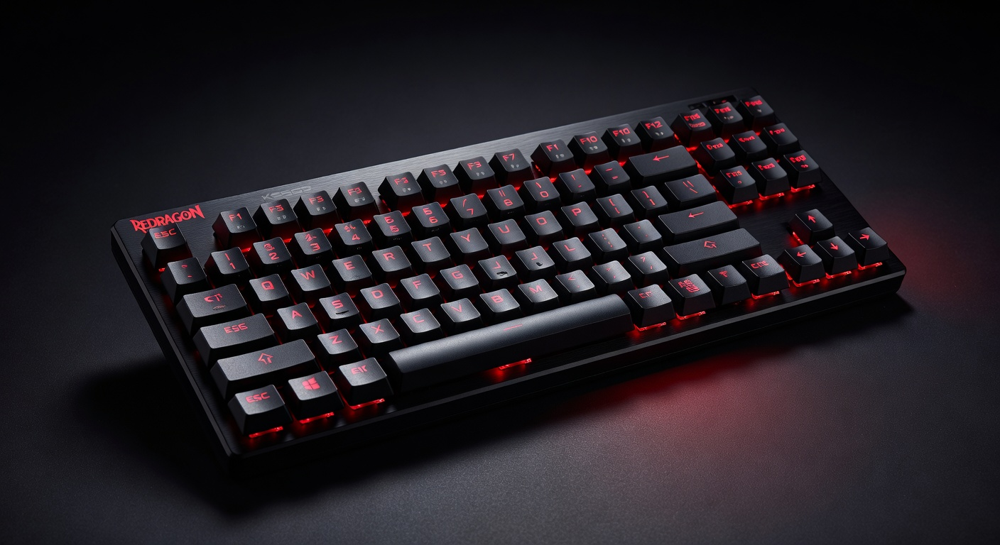
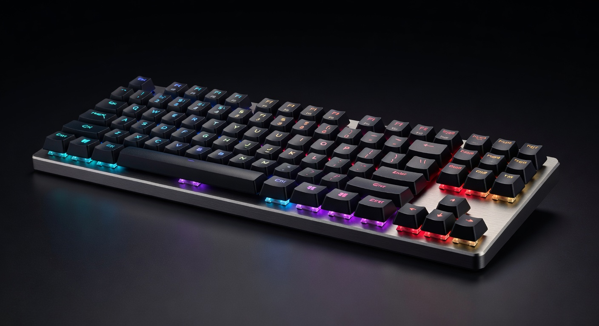
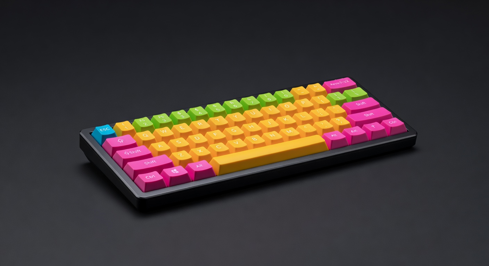
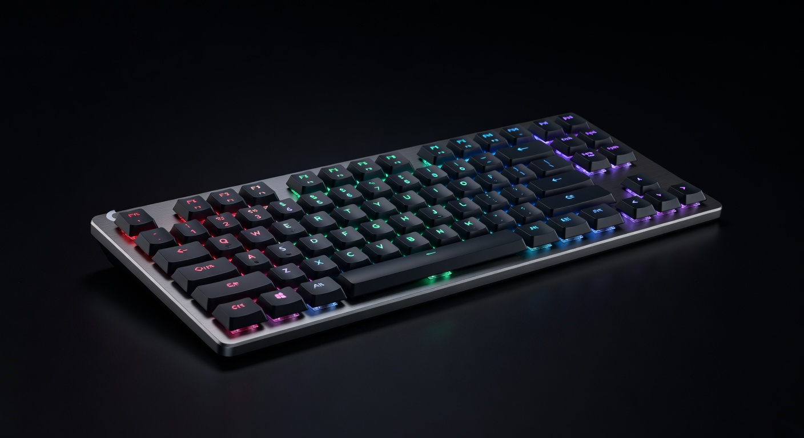
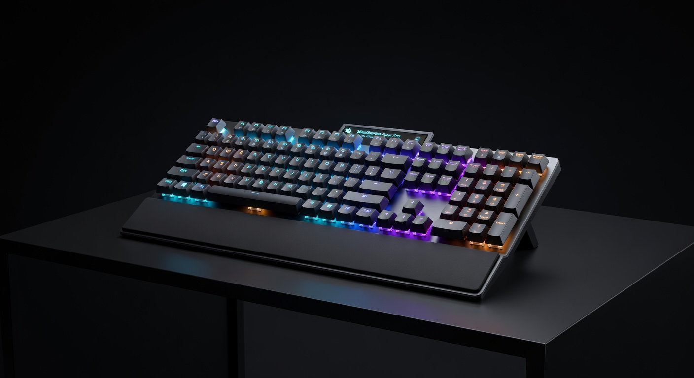

Best Gaming Keyboards 2026: Top 5 Picks at Every Price Point
The keyboard is the only peripheral you physically pound thousands of times per session — and the difference between a $35 board and a $150 one is immediately tactile. We've researched the five best gaming keyboards for 2026 across every price tier, covering switch feel, build quality, layout, and whether wireless is worth it at each price. From tenkeyless to 60%, budget to pro.
| Pick | Keyboard | Price | Switch | Best For |
|---|---|---|---|---|
| 💰 Budget | Redragon K552 KUMARA | ~$35 | Outemu Blue/Red | First mechanical keyboard |
| ⭐ Mid-Range | HyperX Alloy Origins Core | ~$69 | HyperX Red/Aqua | TKL gaming + typing |
| 🎯 Compact | Anne Pro 2 | ~$89 | Gateron Blue/Red | 60% wireless / portable |
| 📡 Wireless | Logitech G915 TKL | ~$199 | GL Low Profile | Slim wireless TKL |
| 👑 Competitive | SteelSeries Apex Pro TKL | ~$189 | OmniPoint Hall Effect | Analog actuation / pro FPS |
Jump to a Section
1. Best Budget Gaming Keyboard (~$35)

The Redragon K552 is the mechanical keyboard that proves you don't need to spend $100+ to get a real typing experience. Outemu Blue switches deliver the audible click and tactile bump that makes mechanical keyboards worth it. TKL (tenkeyless) layout saves desk space. Metal top plate keeps it from feeling like a toy. The best entry point into mechanical gaming keyboards.
Pros
- Real mechanical switches at $35
- Metal top plate — not plasticky
- TKL saves significant desk space
- RGB backlight with multiple modes
Cons
- Outemu switches, not Cherry MX
- Cable is non-detachable
- Blue switches are loud — not office-friendly
2. Best Mid-Range Gaming Keyboard (~$70)

The HyperX Alloy Origins Core is where build quality jumps noticeably from the budget tier. Full aluminum body, detachable USB-C cable, and HyperX's own linear switches (Red) or tactile switches (Aqua) — all better than Outemu at this price. The compact TKL design and clean minimalist aesthetic work for both gaming and productivity. A genuinely premium feel at $70.
Pros
- Full aluminum build feels premium
- Detachable USB-C cable
- HyperX switches are well-regarded
- Very solid for the price
Cons
- No software-free per-key RGB
- HyperX NGENUITY app required for customization
- No wireless option at this price
3. Best Compact / 60% Gaming Keyboard (~$90)

The Anne Pro 2 is the go-to recommendation for 60% keyboard enthusiasts. Bluetooth 4.0 + USB-C wired means true wireless flexibility. Tap-to-arrow key layer covers navigation without a dedicated arrow key cluster. Gateron switches are one step above Cherry MX in smoothness at this price. If desk space is the priority or you travel with your keyboard, this is the pick.
Pros
- True wireless via Bluetooth 4.0
- Minimal footprint — great for small desks
- Gateron switches are excellent
- Tap-to layer covers arrow keys
Cons
- 60% layout has learning curve
- No function key row (layers required)
- Battery life could be better (~4 weeks)
4. Best Wireless Gaming Keyboard (~$200)

The G915 TKL is what wireless gaming keyboards should aspire to be. LIGHTSPEED 1ms wireless eliminates any latency concern. The low-profile GL switches are genuinely satisfying — faster actuation than standard switches for competitive play. 40-hour battery per charge. The aluminum top plate and ultra-thin 22mm profile make it look and feel more expensive than $200. If you want cables off your desk and don't want to compromise, this is it.
Pros
- LIGHTSPEED wireless — zero lag
- 40-hour battery life
- Ultra-thin 22mm profile
- Premium build quality throughout
Cons
- $199 is a significant investment
- Low-profile switches feel different — not for everyone
- No hot-swap switches
5. Best Premium Feature Set (~$180)

The Apex Pro TKL has a feature no other keyboard at any price offers: OmniPoint switches with adjustable actuation distance (0.1mm–4.0mm). Want hair-trigger responses for FPS? Set actuation to 0.4mm. Want to avoid accidental presses? Set it to 2.0mm. The OLED smart display shows media info, game stats, or custom readouts. Full per-key RGB with SteelSeries GG. The most technically impressive gaming keyboard available.
Pros
- Adjustable actuation — genuinely unique
- OLED display is actually useful
- Per-key RGB with 16.8M colors
- Magnetic wrist rest included
Cons
- OmniPoint switch feel is unique — try before buying
- SteelSeries GG software required for adjustable actuation
- Wired only despite the premium price
Quick Comparison: Best Gaming Keyboards 2026
| Keyboard | Price | Layout | Switch Type | Wireless? | Best For | Buy |
|---|---|---|---|---|---|---|
| Redragon K552 KUMARA | ~$35 | TKL | Outemu Blue | No | Budget Entry | Amazon → |
| HyperX Alloy Origins Core | ~$69 | TKL | HyperX Red/Aqua | No | Best Overall Wired | Amazon → |
| Anne Pro 2 | ~$89 | 60% | Gateron | BT 4.0 | Best Compact | Amazon → |
| Logitech G915 TKL | ~$199 | TKL | GL Tactile/Linear | 1ms LIGHTSPEED | Best Wireless | Amazon → |
| SteelSeries Apex Pro TKL | ~$179 | TKL | OmniPoint (adjustable) | No | Most Innovative | Amazon → |
Gaming Keyboard Buying Guide: What Really Matters
Mechanical vs Membrane: Is Mechanical Worth It?
Yes, for gaming. Membrane keyboards (the kind bundled with PCs) have mushy, imprecise actuation. Mechanical switches give you a defined actuation point — you know exactly when the keypress registers. This improves both typing speed and gaming input accuracy. The $35 Redragon K552 proves mechanical doesn't have to mean expensive.
Switch Types: Linear, Tactile, and Clicky
Linear (Red, Speed Silver): Smooth keystroke, no tactile bump, quietest. Preferred for FPS gaming — faster, less fatiguing. Tactile (Brown, Aqua): Physical bump at actuation point, no audible click. Good all-rounder for gaming + typing. Clicky (Blue, Green): Loud click + tactile bump. Best typing feel, worst for roommates and open offices.
Layout: Full, TKL, or 60%?
Full size (100%): includes numpad — good for work, takes more desk space. TKL (80%): removes numpad, most popular for gaming — better mouse movement space. 60%: removes function row and arrows — very compact, needs layer system for navigation. Most competitive gamers prefer TKL for the balance of functionality and desk space.
Wired vs Wireless for Gaming
Unlike mice, keyboard input latency is less critical — your fingers aren't making millimeter adjustments. Wireless is genuinely viable for gaming keyboards. The G915 TKL's LIGHTSPEED wireless is effectively wired in latency terms. The main downside is battery life management and the price premium. Budget wireless keyboards ($50–$80 range) often have latency issues — stick to Logitech LIGHTSPEED or spend on the G915.
Hot-Swap Switches: Future-Proofing
Hot-swap sockets let you remove and replace switches without soldering. This means you can try different switch types without buying a new keyboard. None of the boards in this guide are hot-swap — that typically pushes price to $100+. If switch experimentation is important, budget $100+ and look for keyboards specifically marketed as hot-swap (Keychron Q series, Glorious GMMK).
More Gaming Gear Guides
Head-to-Head Comparisons
- HyperX Alloy Origins Core vs SteelSeries Apex Pro TKL →
- Razer Huntsman V3 Pro vs Wooting 60HE →
- Wooting 60HE vs Razer Huntsman V3 Pro TKL — Hall Effect vs optical rapid trigger →
- Corsair K100 RGB vs SteelSeries Apex Pro TKL — 8000Hz vs Hall Effect →
- Logitech G915 TKL vs Corsair K65 RGB Wireless — wireless keyboard showdown →
- Keychron K8 Pro vs SteelSeries Apex 7 →
- Best Gear for Competitive FPS 2026 →